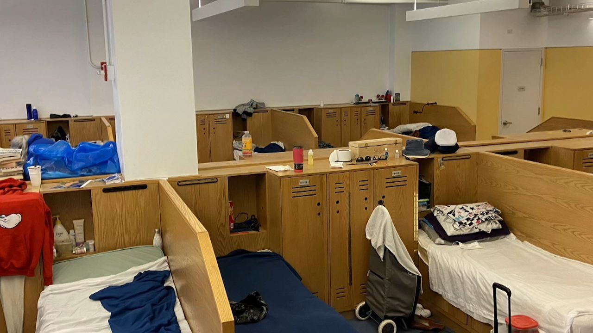
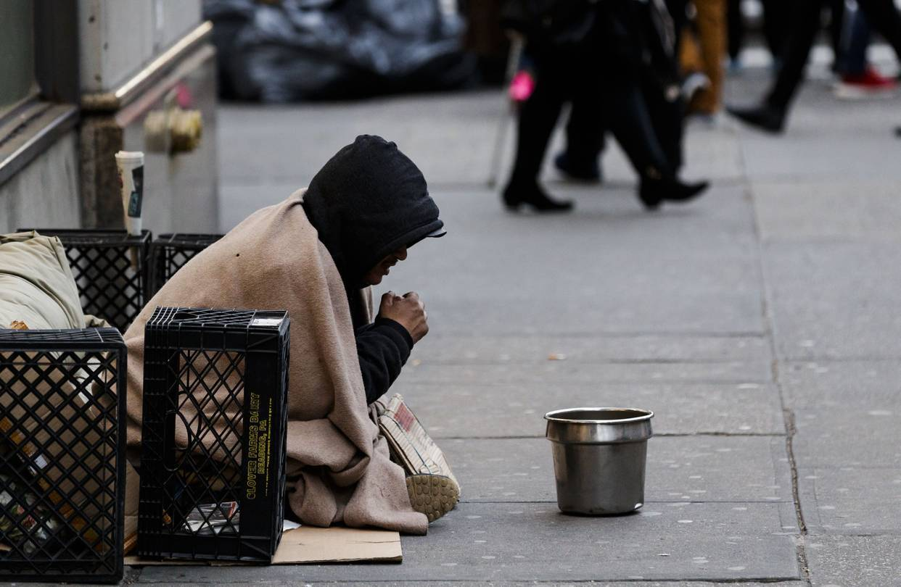
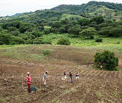
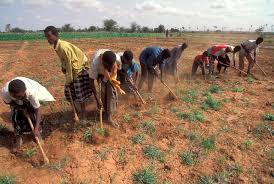

Ways that we can prevent porverty is have more shelters cause we shouldn't have homeless people living out in the streets without a home
The absence of affordable housing is the main reason for homelessness. By providing employment opportunities, the homeless can become more self-reliant and will also prevent social exclusion.
Another way is Free market policies to promote economic growth – hoping that rising living standards will filter down to the poorest in society.
Providing affordable housing, employment opportunities, and removing discrimination are good solutions for primary prevention.
Increase employment. Raise America's pay. Sustain not cut the social safety net. Paid family and sick leave. End mass incarceration. Invest in high quality childcare and early ed.
Tackle segregation and concentrated poverty. Immigration reform.
In India, the rate of economic development is very low what is required for a good level. Therefore, there persists a gap between the level of availability and requirements of goods and services. The net result is poverty.


Solutions for rural Poverty
Make agriculture more inclusive, sustainable and productive. Some people in the country side depend on agriculture for their survival and to helping out their family, so making agriculture more inclusive can help close the poverty gap.
Land reform is another way to help the rural poor in the world. With land reform, access to land is what divides the rich rural people and the poor rural people. Access to land gives families a reliable and productive way to make an income.
Creating more and better jobs will allow people of different ages obtain a better income for their families, especially the young people.


Solutions for urban Poverty
Enhancement of productive jobs for everyone and better income for the poor.
Improving food security and access to clean water can help reduce Poverty in cities.
Giving more access to health services can help out the people in poverty.